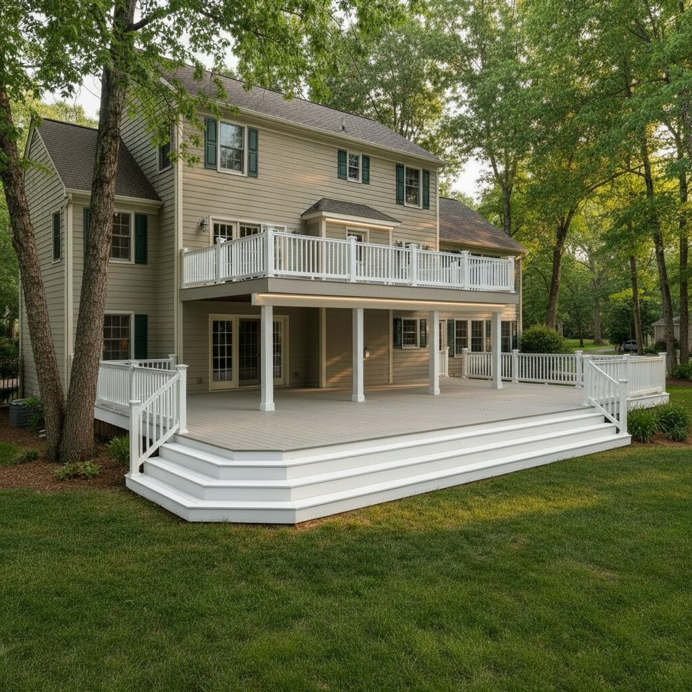

Homeowner and Builder Guide
Second-Story Deck Waterproofing: How to Keep the Patio Below Dry
A second-story deck gives you two outdoor spaces for the price of one structure, but only if the lower one stays dry. A standard upper deck drains straight through its board gaps onto the patio, the furniture, and anyone sitting underneath. Here is how the main waterproofing approaches compare, and what to plan before you build so the space below is a room you actually use.

Why upper decks leak onto the patio below
A conventional deck is designed to drain through itself. The boards are spaced with a small gap, rain falls between them, and whatever is underneath gets wet. On a ground-level deck over dirt, that is fine. On a second-story deck over a patio, every one of those gaps drips onto the space you wanted to use. The water also soaks the joists, beams, and ledger on every storm, which is where rot and fastener corrosion start.
So second-story deck waterproofing comes down to one decision: where do you stop the water? You can stop it at the walking surface, or you can let it through the boards and catch it under the framing.
Three ways to waterproof a second-story deck
1. A membrane or coating over a solid deck
A vinyl sheet membrane or a liquid-applied coating goes over plywood sheathing, and that sealed sheet becomes the walking surface. This is a common approach for balconies and decks over living space. The trade-off is the look and feel: you walk on the membrane rather than on deck boards, and seams and edges have to be detailed carefully on site.
2. A below-joist drainage system
Trays, panels, or a membrane on a sloped frame are installed under the joists to catch the water that drips through and send it to a gutter. This is the usual choice when the existing deck boards will stay, because nothing changes on top. The trade-off is that the barrier sits below the framing, so the joists and beams keep getting wet. See above-joist vs below-joist deck drainage for a deeper comparison.
3. Deck boards that are the waterproof layer
On a new deck or a qualifying full re-deck, the boards themselves can carry the waterproofing. AmeriDex is cellular PVC deck board with a proprietary ASA cap and Dexerdry, an automotive-grade TPE seal installed between every board. Rain runs across the surface and off the planned discharge edge instead of falling through, so the framing stays dry along with the patio. Underneath, you get open, dry framing that you can leave exposed or finish with a ceiling, lights, and a fan. See how the system works.
How the options compare
| Approach | Patio below stays dry? | Joists stay dry? | Looks like a board deck? | Works with existing boards? |
|---|---|---|---|---|
| Sealed PVC deck boards (AmeriDex) | Yes | Yes | Yes | No (new deck or full re-deck) |
| Membrane or coating over sheathing | Yes | Yes | No | No |
| Below-joist trays or panels | Yes | No | Yes | Yes |
| Standard gapped deck boards | No | No | Yes | Not applicable |
What to plan before you build
Whichever approach you choose, a dry space under an upper deck depends on details that are decided at the framing stage. With AmeriDex, these are standard deck-building details rather than special sub-framing:
- Pitch. The framing slopes away from the house so water runs across the boards and off the outer edge.
- A place for the water to go. Plan a gutter or other discharge at the low edge so runoff does not splash back onto the patio.
- Ledger and perimeter flashing. Flash the ledger where the deck meets the house, and use a frieze board and drip edge at the perimeter.
- Joist layout. AmeriDex uses a conventional 16 inch on-center joist layout for residential decks.
- Open sides. A waterproof surface stops the rain coming through the boards, but open-sided areas can still see wind-driven rain. Screens, walls, or furniture placement handle that.
- Local code. Have your builder confirm permit and code requirements, especially if the deck sits over a garage or a finished room.
Always follow the current AmeriDex installation instructions for the exact pitch, overhang, fastening, and edge details. Builders can find more on the contractor resources page.
What the space below can become
Once the upper deck stops dripping, the patio underneath stops being leftover space. It can hold an outdoor kitchen, a dining table, a lounge with a TV, or dry storage for bikes and cushions, all on square footage you already built. Browse under-deck living space ideas or the AmeriDex gallery for inspiration, and see the dry space under a deck guide for what to put underneath.
Frequently asked questions
What is the best way to waterproof a second-story deck?
It depends on whether you are building new and how you want the deck to look. A vinyl or liquid membrane over plywood sheathing makes a sealed surface but gives up the look of deck boards. A below-joist system catches water under the framing and works on an existing deck, but the joists still get wet. On a new deck or a qualifying full re-deck, PVC deck boards with an integrated seal such as AmeriDex make the walking surface itself the waterproof layer, so the framing and the patio below both stay dry.
Can I waterproof my existing second-story deck?
Not by adding a seal between boards that stay in place. If the boards will stay, a below-joist tray or panel system is the usual option. If the framing is sound and can meet the pitch, overhang, flashing, and fastening requirements, a full re-deck removes the old boards and installs AmeriDex on the existing joists. A builder should assess the framing first.
Why does my upper deck drip onto the patio below?
Standard deck boards are installed with gaps between them so water can drain through. On a second-story deck, everything that drains through those gaps lands on the patio, furniture, and people underneath. Stopping the drip means closing those gaps at the surface or catching the water below the joists.
Does a waterproof upper deck need special framing?
AmeriDex uses a conventional 16 inch on-center joist layout. The framing needs a drainage pitch away from the house, the specified board overhang, a frieze board and drip edge at the perimeter, and flashing at the ledger. Always confirm the details in the current installation instructions and with your local building department.
Will the patio under a waterproof deck stay completely dry?
A waterproof deck surface stops the rain that would otherwise fall through the boards. Open-sided areas under the deck can still get wind-driven rain, and the water that runs off the deck edge needs a planned place to go, such as a gutter, so it does not splash back onto the patio.
Planning a second-story deck?
Tell us about your project. We will return a free quote and ship samples in all seven colors so you can see the AmeriDex Dryspace system before you build.
Get a free quote Request samplesRelated reading: Waterproof decking guide · Dry space under a deck · Deck rain shield options · Above-joist deck drainage explained · Water dripping through your deck · Options for an existing deck · Cost guide